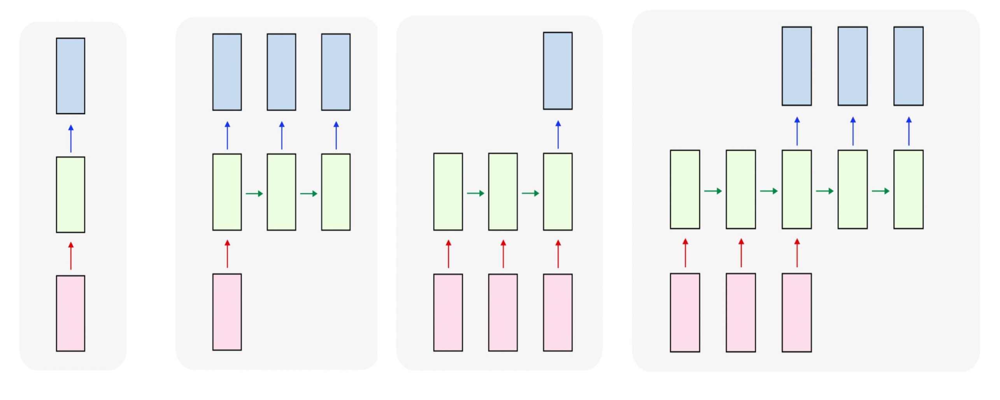
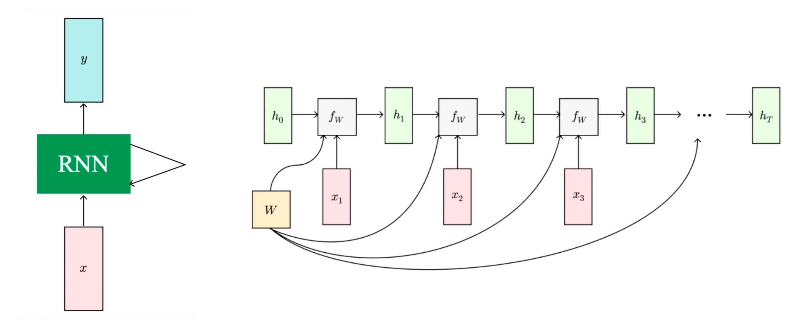
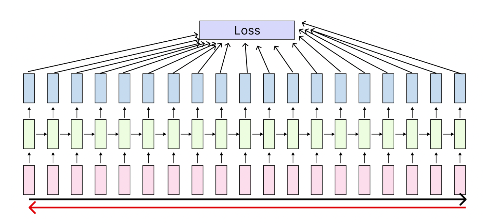
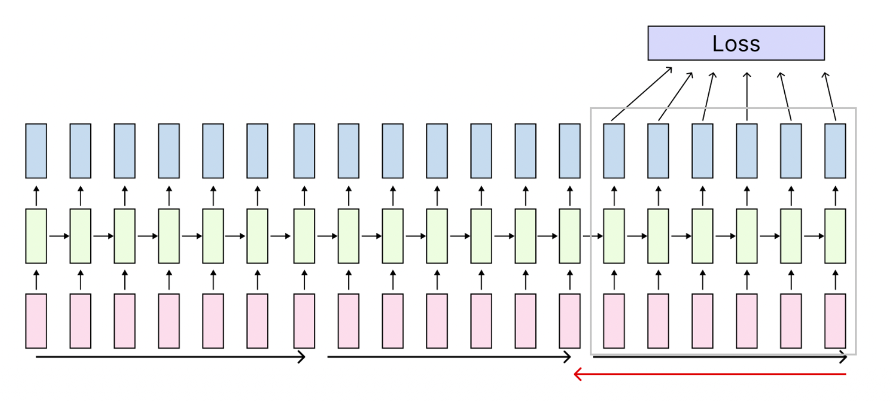

1. Introduction: 순차 데이터(Sequence Data) 처리를 향하여
기존의 Feedforward Neural Networks(예: CNN, MLP)는 고정된 크기의 입력값을 받아 고정된 크기의 출력값을 반환하는 구조를 가집니다. 그러나 자연어 처리(NLP), 음성 인식, 비디오 분석과 같은 도메인에서는 입력 데이터의 길이가 가변적이며, 이전 시점의 데이터가 현재 시점에 영향을 미치는 순차적 특성(Sequential nature)을 지닙니다.
이러한 순차 데이터를 효과적으로 모델링하기 위해 등장한 개념이 바로 순환 신경망(Recurrent Neural Networks, RNN)입니다. RNN은 내부에 ’상태(State)’를 저장할 수 있는 메모리 구조를 도입하여, 시계열 데이터를 처리할 수 있도록 설계되었습니다.
2. Architectures of Neural Networks
네트워크가 입력(Input)과 출력(Output)을 어떻게 매핑하느냐에 따라 다양한 아키텍처로 분류할 수 있습니다. RNN은 구조적 유연성을 바탕으로 다양한 형태의 매핑을 지원합니다.

- One to one: 단일 입력 \(\rightarrow\) 단일 출력. 전통적인 Feedforward Network의 형태입니다.
- Example: 이미지 분류 (Image \(\rightarrow\) Label)
- One to many: 단일 입력 \(\rightarrow\) 순차 출력. 하나의 정보를 바탕으로 일련의 시퀀스를 생성합니다.
- Example: 이미지 캡셔닝 (Image \(\rightarrow\) Sequence of words)
- Many to one: 순차 입력 \(\rightarrow\) 단일 출력. 시계열 데이터를 모두 읽은 후 하나의 결론을 도출합니다.
- Example: 비디오 행동 분류, 감성 분석 (Sequence of words/images \(\rightarrow\) Label)
- Many to many: 순차 입력 \(\rightarrow\) 순차 출력. 입력 시퀀스와 출력 시퀀스의 길이가 같거나 다를 수 있습니다.
- Example 1: 기계 번역 (Sequence of words in English \(\rightarrow\) Sequence of words in Korean)
- Example 2: 프레임 단위 비디오 분류 (Sequence of images \(\rightarrow\) Sequence of labels)
3. Mathematical Formulation of Vanilla RNN
RNN의 가장 핵심적인 아이디어는 시퀀스가 처리됨에 따라 업데이트되는 ‘내부 상태(Internal State)’를 가진다는 것입니다. 매 타임스텝(time step) \(t\)마다, 네트워크는 이전 시점의 은닉 상태(hidden state) \(h_{t-1}\)과 현재 시점의 입력 \(x_{t}\)를 받아 새로운 은닉 상태 \(h_{t}\)를 계산합니다.
가장 기본적인 형태의 RNN인 Vanilla RNN (또는 Elman RNN)은 다음과 같은 점화식(Recurrence formula)으로 표현됩니다.
\[h_{t} = f_{W}(h_{t-1}, x_{t})\]
이때 중요한 점은 모든 타임스텝에서 동일한 함수 \(f_W\)와 파라미터 \(W\)가 반복적으로 사용(Parameter Sharing)된다는 것입니다. 구체적인 수식은 다음과 같습니다.
\[h_{t} = \tanh(W_{hh}h_{t-1} + W_{xh}x_{t} + b_{h})\] \[y_{t} = W_{hy}h_{t} + b_{y}\]
- \(x_t\): \(t\) 시점의 입력 벡터
- \(h_t\): \(t\) 시점의 은닉 상태 (단일 은닉 벡터로 구성됨). 과거의 정보를 요약하여 담고 있습니다.
- \(y_t\): \(t\) 시점의 출력 벡터
- \(W_{hh}\): 은닉 상태 간의 전이를 담당하는 가중치 행렬
- \(W_{xh}\): 입력값을 은닉 상태로 변환하는 가중치 행렬
- \(W_{hy}\): 은닉 상태를 최종 출력으로 변환하는 가중치 행렬
- \(b_h, b_y\): 편향(bias) 벡터
- \(\tanh\): 비선형 활성화 함수. 값의 범위를 \([-1, 1]\)로 제한하여 그래디언트의 안정성을 돕습니다.

4. Computation Graphs: Unrolling over Time
RNN을 학습하고 이해하기 위해서는 순환 구조를 시간 축(Time-step)에 따라 길게 펼쳐서(Unroll) 생각하는 것이 편리합니다.
4.1 Sequence to Sequence (Many to Many)
입력 시퀀스 \(x_1, x_2, \dots, x_T\)가 들어올 때, 매 스텝마다 \(h_t\)가 계산되고 그에 대응하는 출력 \(y_t\)와 손실값 \(L_t\)가 산출됩니다. 최종 손실값 \(L\)은 각 스텝의 손실을 모두 합한 값이 됩니다 (\(L = \sum_{t=1}^T L_t\)).
4.2 Encoding & Decoding (Seq to Seq)
기계 번역 등에서 사용되는 Many to one + One to many 구조입니다. 1. Many to one (Encoder): 입력 시퀀스를 차례대로 읽어들여, 마지막 은닉 상태 \(h_T\)에 전체 입력 시퀀스의 문맥 정보를 하나의 벡터로 압축(Encode)합니다. 이때 가중치 \(W_1\)이 사용됩니다. 2. One to many (Decoder): 압축된 문맥 벡터를 초기 상태로 삼아, 가중치 \(W_2\)를 사용하여 새로운 출력 시퀀스를 순차적으로 생성(Decode)해 냅니다.
5. Example: Character-level Language Modeling
RNN이 작동하는 방식을 직관적으로 이해하기 위해, 문자 수준(Character-level) 언어 모델을 살펴보겠습니다. 모델의 목표는 주어진 문자열을 바탕으로 다음에 올 문자를 예측하는 것입니다.
- 학습 데이터: “hello”
- 어휘 사전(Vocabulary): \([h, e, l, o]\) (크기 \(V=4\))
- 입력 인코딩: 각 문자는 원-핫 벡터(One-hot vector)로 인코딩됩니다. 예) ‘h’ = \([1, 0, 0, 0]^T\)
5.1 Forward Pass (Training)
주어진 시퀀스 “hel”을 입력하여 “ello”를 예측하는 과정입니다.
- \(t=1\): 입력 ’h’가 들어갑니다. \(h_1 = \tanh(W_{hh}h_0 + W_{xh}x_1 + b_h)\)를 계산합니다. 출력층 \(y_1\)을 통해 다음 문자가 ’e’일 확률을 예측합니다.
- \(t=2\): 입력 ’e’가 들어갑니다. 이전 상태 \(h_1\)과 결합하여 \(h_2\)를 계산하고, 출력층을 통해 ’l’을 예측합니다.
- \(t=3\): 입력 ’l’이 들어갑니다. 동일한 방식으로 \(h_3\)를 업데이트하고, 다음 문자 ’l’을 예측합니다.
- \(t=4\): 입력 ’l’이 들어가고, 다음 문자 ’o’를 예측합니다.
각 출력 \(y_t\)에 Softmax 함수를 취해 확률 분포를 얻고, 실제 정답 문자와의 Cross-Entropy Loss를 계산하여 네트워크를 학습시킵니다.
5.2 Embedding Layer의 도입
입력을 원-핫 벡터로 표현할 때, 입력 가중치 행렬 \(W_{xh}\)와 원-핫 벡터 \(x_t\)의 행렬 곱은 단순히 \(W_{xh}\)의 특정 열(Column)을 추출하는 연산과 수학적으로 완전히 동일합니다.
\[ \begin{bmatrix} w_{11} & w_{12} & w_{13} & w_{14} \\ w_{21} & w_{22} & w_{23} & w_{24} \\ w_{31} & w_{32} & w_{33} & w_{34} \end{bmatrix} \begin{bmatrix} 1 \\ 0 \\ 0 \\ 0 \end{bmatrix} = \begin{bmatrix} w_{11} \\ w_{21} \\ w_{31} \end{bmatrix} \]
불필요한 행렬 곱 연산을 피하기 위해, 실제 딥러닝 프레임워크에서는 이를 분리하여 임베딩 계층(Embedding Layer)으로 구현합니다.
5.3 Test-time Generation (Inference)
학습이 끝난 후 모델이 새로운 텍스트를 생성하는 과정은 다음과 같습니다. 1. 초기 문자(Start token)를 네트워크에 입력합니다. 2. Softmax를 통과한 출력 분포에서 다음 문자를 샘플링(Sample)합니다. 3. 샘플링된 문자를 다음 타임스텝의 입력으로 다시 주입(Feed back)합니다. 4. 이 과정을 반복하여 전체 문장을 생성합니다.
6. Training RNNs: BPTT and Truncated BPTT
RNN의 가중치를 업데이트하기 위해서는 시간의 역방향으로 그래디언트를 전파해야 합니다. 이를 BPTT(Backpropagation Through Time)라고 부릅니다.
6.1 BPTT의 한계
BPTT는 전체 시퀀스에 대해 Forward Pass를 수행하여 손실을 계산한 뒤, 다시 전체 시퀀스를 거슬러 올라가며 Backward Pass를 수행하여 그래디언트를 계산합니다. 만약 시퀀스 길이가 매우 길다면(예: 책 한 권의 텍스트), Forward Pass에서 발생한 모든 은닉 상태를 메모리에 저장해야 하므로 막대한 메모리가 소모된다는 치명적인 문제가 발생합니다.

6.2 Truncated BPTT (TBPTT)
이러한 문제를 해결하기 위해 Truncated BPTT 기법이 고안되었습니다. * 긴 시퀀스를 일정한 크기의 청크(Chunk)로 나눕니다. * Forward Pass 시에는 이전 청크의 마지막 은닉 상태를 다음 청크의 초기 은닉 상태로 전달합니다. 즉, 은닉 상태는 시간의 흐름에 따라 끊임없이 앞으로 전달(Carry hidden states forward forever)됩니다. * 그러나 Backward Pass(오차 역전파)는 해당 청크 내부의 제한된 스텝 수만큼만 수행합니다. * 예를 들어, 청크 2의 Backward Pass는 청크 1으로 그래디언트를 전달하지 않고 잘라냅니다(Truncate). 이를 통해 긴 문맥 정보를 유지하면서도 메모리 사용량과 연산량을 현실적인 수준으로 제어할 수 있습니다.

7. Applications of RNN
RNN은 시계열 데이터를 다룰 수 있는 특성 덕분에 매우 강력한 생성 능력을 보여줍니다.
- 문학 작품 생성: 셰익스피어의 소네트(Sonnets)나 톨스토이의 소설 텍스트로 RNN을 학습시키면, 처음에는 의미 없는 문자열을 뱉어내다가 학습이 진행될수록 실제 영어 단어, 띄어쓰기, 심지어 문장 구조와 문체까지 모방하여 새로운 텍스트를 생성해냅니다.
- 코드 생성: 리눅스 커널의 C 코드 등을 학습 데이터로 사용하면, 괄호 맞춤, 들여쓰기, 변수 선언 등을 문법에 맞게 생성하는 코드를 작성할 수 있습니다.
7.1 Image Captioning (CNN + RNN)
RNN과 컴퓨터 비전(CNN) 기술을 결합하여, 이미지를 설명하는 자연어 문장을 생성하는 이미지 캡셔닝(Image Captioning) 모델을 만들 수 있습니다.
- Feature Extraction: 먼저, 사전에 학습된 CNN (예: VGG, ResNet)의 마지막 분류 계층(FC layer)을 제거하여 이미지의 핵심 특징이 압축된 시각적 문맥 벡터(Visual Context Vector) \(v\)를 추출합니다.
- RNN Modification: 기존 Vanilla RNN의 점화식에 이 이미지 벡터 \(v\)가 추가적인 조건(Condition)으로 작용하도록 수식을 수정합니다.
\[h_{t} = \tanh(W_{hh}h_{t-1} + W_{xh}x_{t} + \mathbf{W_{ih}v} + b_{h})\]
새롭게 추가된 \(W_{ih}\)는 이미지 벡터 \(v\)를 은닉 상태의 차원으로 투영하는 가중치 행렬입니다. 즉, RNN은 매 스텝 단어를 생성할 때마다 “이전까지 생성한 문맥”과 “현재 주어진 이미지 정보”를 동시에 고려하여 다음 단어를 예측하게 됩니다. 모델은 예측된 단어가 <END> 토큰일 때 생성을 종료합니다.
실행 결과 예시: * 성공 사례: “A cat sitting on a suitcase on the floor”, “A dog is running in the grass with a frisbee.” 처럼 이미지 내 객체와 행동을 정확히 파악하여 문장으로 서술합니다. * 실패 사례: 거미줄 덩어리를 새가 나뭇가지에 앉아 있는 것(“A bird is perched on a tree branch”)으로 오인하거나, 야구 수비 장면의 복잡한 동작을 투수(“A man in a baseball uniform throwing a ball”)로 잘못 예측하기도 합니다. 이는 RNN 자체의 문제라기보다는 시각적 특징 추출의 한계나 데이터셋의 편향성에서 기인하는 경우가 많습니다.